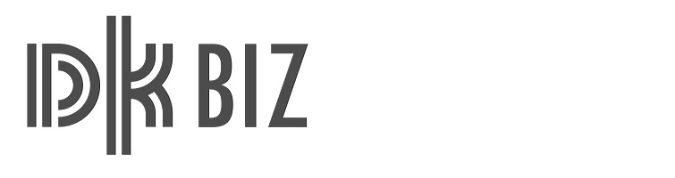
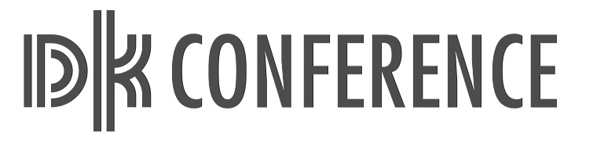
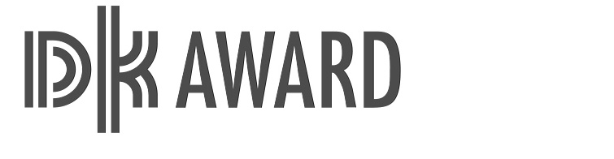
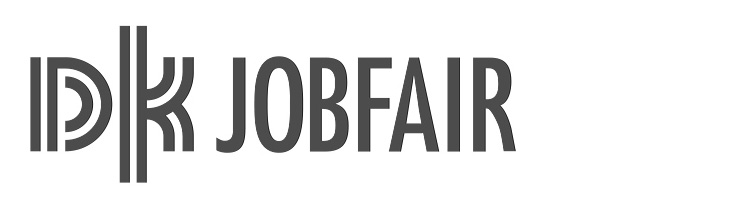
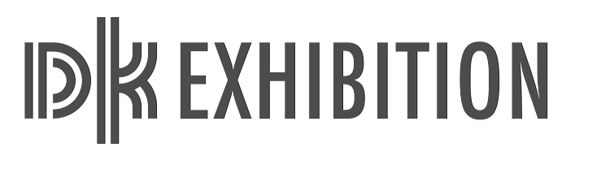
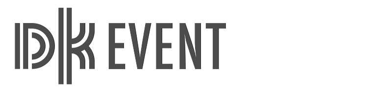

서비스디자인제조혁신>디자인코리아
디자인코리아
디자인코리아 페스티벌
- 아시아 대표 국내 최대 규모의 디자인종합박람회로 매년 국내외 560여개 기업의 최신 디자인 제품 2,000여점이 전시되며, 5일간 약 6만여명의 관람객이 방문하며 대한민국 디자인 문화확산에 앞장서고 있습니다.
- 세계적 권위의 디자인 어워드를 비롯한 글로벌 디자인 트렌드를 한눈에 관람할 수 있으며, 국내외 선도 디자이너들을 초청한 컨퍼런스를 통해 디자인의 가치를 공유하고 미래를 제시합니다.
- 참가기업에게 국내외 바이어와 맞춤형 비즈니스 기회와 투자자 연결을 통해 기업이 글로벌 기업으로 성장하도록 기여하고 있습니다.
- 디자인 코리아 잡페어 개최를 통해 우수디자이너와 기업 간 네트워킹 환경을 제공함으로써, 디자인 산업혁명의 시작을 도와드립니다.
- DKfestival 홈페이지 바로가기
2020 주제
-
- Design Beyond Data 디자인, 데이터를 그리다
- 디자인이 인간의 오랜 역사 속에서 만들어낸 다양한 흔적인 '데이터'를 주도하는 혁신을 통한 디자인 산업의 미래를 제시합니다.
- 데이터는 디자인적 상상력과 아이디어를 통해 새로운 가치로 재인식될 것입니다. 4차 산업혁명시대에 디자인 주도로 융합된 데이터가 사회에 공유되어 시대에 대한 이해의 폭을 넓힌다면 디자인은 혁신의 원동력이 될 것입니다.
-
- 2018
K-design DNA - 2019
Digital Transformation - 2020
Design Beyond Data - 디자인코리아 페스티벌은 '디자인, 혁신을 주도하다 Design Driven Innovation'라는 미션을 매년 새로운 주제와 함께 발전시키고 있습니다.
- 2018
행사구성
- 
국내외 바이어와의 비즈니스 네트워킹을 통해 기업의 수익창출과 글로벌 시장 선점 기회 제공
- 
국제 디자인 컨퍼런스, 디자인포럼, 세미나로 디자인 산업전반에 대한 동향 파악
- 
우수디자인(GD)상품선정, 대한민국디자인전람회, 국내외 우수디자인 공모전 수상작으로 디자인 흐름 파악
- 
대한민국 디자인 산업을 이끌어 갈 차세대 유망 디자이너 협력망 구축, 국내 유일 디자인 잡페어
- 
국내외 우수콘텐츠 전시 및 우수기업 참여를 통해 디자인 산업의 트렌드 제시
- 
DK스튜디오, 디자인 카페를 통해 디자인 경험하며 새로운 즐거움 공유
행사연혁
한·중 교차전시
-
- 2003
- 서울
세계베스트
디자인전 - 131,783명
-
- 2004
- 디자인
코리아
_베이징 - 52,941명
-
- 2005
- 서울
세계베스트
디자인전 - 161,232명
-
- 2006
- 디자인
코리아
_상하이 - 67,532명
-
- 2007
- 디자인
코리아 - 125,127명
-
- 2008
- 디자인
코리아
_광저우 - 164,847명
-
디자인 트렌드 기획전시
-
- 2009
- 디자인
코리아 - 77,076명
-
- 2010
- 디자인
코리아 - 78,206명
-
- 2011
- 디자인
코리아 - 32,073명
-
- 2012
- 디자인
코리아 - 21,238명
-
- 2013
- 디자인
코리아 - 20,382명
-
-
디자인 종합박람회
-
- 2014
- DK 2014
- 32,465명
-
- 2015
- DK 2015
- 53,629명
-
- 2016
- DK 2016
- 59,114명
-
- 2017
- DK 2017
- 60,686명
-
- 2018
- DK 2018
- 60,793명
-
- 2019
- DK 2019
- 60,975명
-